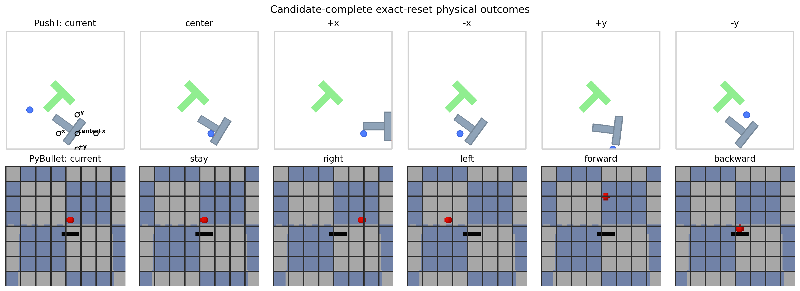
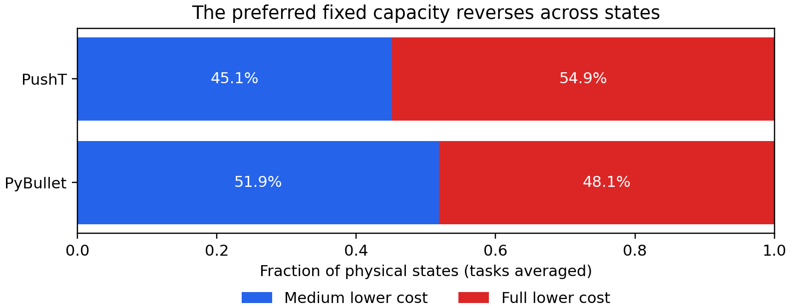
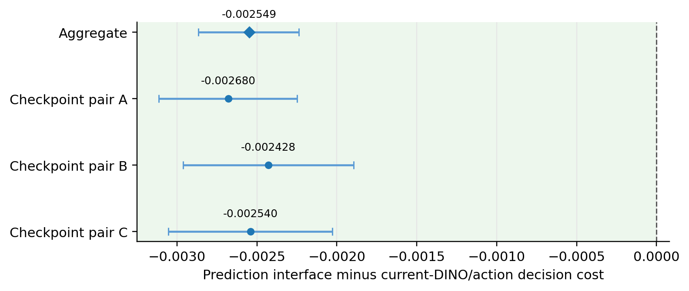
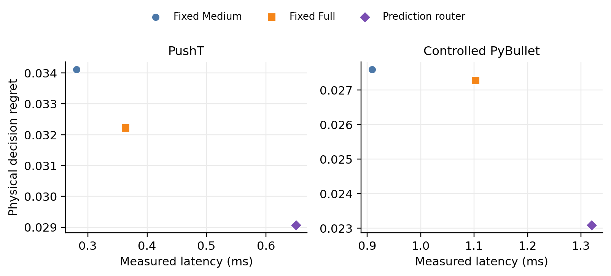
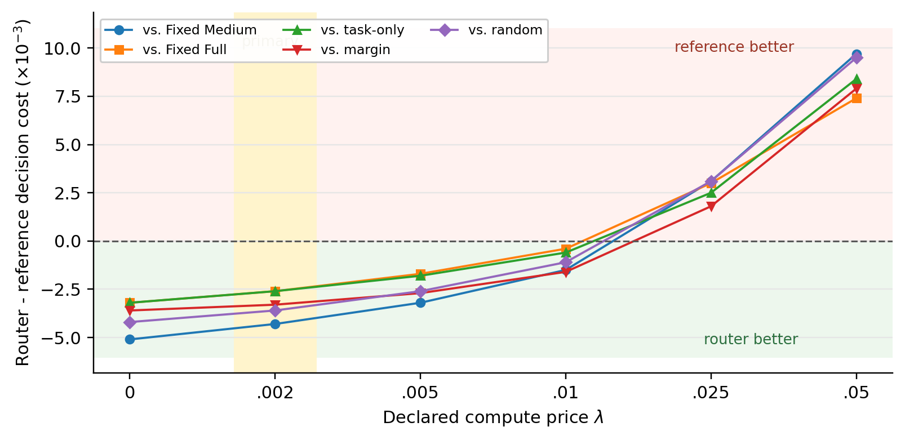

Paired exact-reset evaluation
For every physical state, all candidate actions are executed from exactly the same reset. This makes the Medium-versus-Full physical loss difference observable offline and removes state-sampling confounding.

Why can Medium beat Full?
Prediction training optimises latent error. The controller selects an action after latent-to-physical calibration, task-specific scoring, and a hard argmin over five candidates. A small ranking change can therefore flip the executed action.
Prediction quality
How close is the predicted future representation to the observed future representation?
Decision quality
Which candidate produces the lowest realised physical task loss after the model's selected action is executed?

Prospectively sealed confirmation
A second fresh PushT bank tests prediction against a stronger present-state alternative: task + current DINO + all candidate actions, matched to 65 dimensions and given favourable latency accounting.


Precise claim boundary
Supported
- Candidate-complete paired physical evaluation
- Useful routing from Medium-derived predictions
- A sealed win over one strong current-DINO/action control
- Paper-facing recomputation from compact records
Not established
- Raw latency or energy saving
- Closed-loop control value
- Universal prediction-over-state superiority
- Cross-family world-model generality

Reproduce the released results
The lightweight release verifies mathematical identities, frozen source hashes, threshold semantics, clustered bootstrap outputs, the sealed confirmation, and paper-facing values without a GPU.
git clone https://github.com/malodept/wmroute.git cd wmroute python -m venv .venv source .venv/bin/activate python -m pip install -r requirements/verification.txt python -m pip install -e . bash scripts/run_all_checks.sh